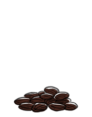

dried raisins
Raisins are large, dried, dark-colored grapes, not to be confused with sultanas (golden-colored)and currants (small black seedless grapes). They contain some vitamin C, but less than fresh grapes. Raisins are dried in 3 steps, the first is pre-treatment. Raisins are dipped in a dry emulsion 'cold dip' that increases the rate of water loss by 3x. A faster water removal lowers browning and produces better raisins. Step two, is drying, where the raisins are either sun-dried, shade-dried or dried mechanically. Step three, involves cleaning the raisins and removing all foreign objects for consumption. This 'washing' process causes rehydration, which means that another drying step is require to remove all moisture.
Important note: Raisins are toxic to dogs.
Weight
Loose: 1 cup | 5 1/4 oz | 149 g
Packed: 1/2 cup | 3 oz | 85 g